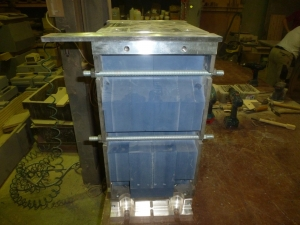
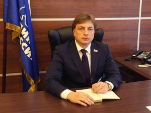
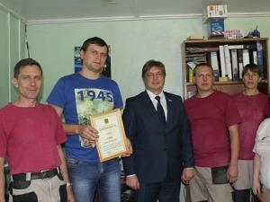
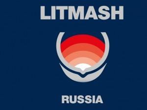
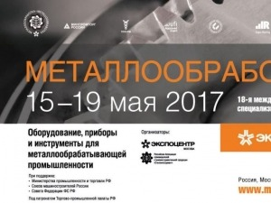

НОВОСТИ
-
Отгрузка оснастки для линии IMF
В мае 2018 года состоялась отгрузка модельного комплекта для безопочной автоматической формовочной линии IMF для получения отливки "Корпус поглощающего аппарата". Состав модельного комплекта: 2 ящика для безопочной формовки со смонтированными моделями верха и низа, автоматический стержневой ящик для получения центрального стержня.
При изготовлении данного модельного комплекта были использованы различные материалы: модельные пластики, различных плотностей и марок, высокосортная влагостойкая фанера, сталь, алюминий.
20 мая 2018 -
7 лет на рынке модельного производства!
В конце сентября нашему предприятию исполнилось 7 лет!
Дорогие коллеги!
В наш общий праздник мне хочется Вас поблагодарить за преданность общему делу, выдержку и добросовестное отношение к работе! Желаю Вам крепкого здоровья, семейного счастья, роста благосостояния и интересной творческой работы!
Генеральный директор ООО "Промодель" А. А. Стрельников
02 октября 2017 -
Награждение сотрудников ООО "Промодель"
Высококвалифицированный кадровый состав ООО «Промодель» - отличительная черта и гордость коллектива предприятия. А подтверждением качества выпускаемой продукции в свою очередь являются высокие оценки руководства города.
В 2017 году от лица главы города Пенза Валерия Петровича Савельева за плодотворную и безупречную работу, высокий профессионализм была объявлена благодарность нашим лучшим сотрудникам, в число которых входят инженеры-конструкторы, операторы станков с ЧПУ и маляры. Отличившимся представителям трудового коллектива были вручены свидетельства, подтверждающее это значимое в их трудовой биографии событие.
26 сентября 2017 -
Выставка "Металлургия. Литмаш`2017
В июне руководство предприятия ООО «Промодель» посетило ежегодный выставочный форум «Литмаш. Россия`2017», проходивший в Москве уже в 17-й раз.
Российский рынок остается одним из самых перспективных в мире и имеет большой потенциал роста, развивается в технологическом плане. В этом году свои экспозиции представили более 300 предприятий и организаций со всего мира.
По опыту предыдущих лет, можем с уверенностью утверждать, что выставка послужит платформой для установления деловых контактов со специалистами в области металлургии и литейного дела.
25 июня 2017 -
Выставка "Металлообработка-2017"
18 мая специалисты компании ООО «Промодель» побывали на 18-й международной специализированной выставке «Оборудование, приборы и инструменты для металлообрабатывающей промышленности» - «Металлообработка-2017». Выставка в очередной раз доказала свой статус крупнейшей в сфере станкостроения, демонстрируя новейшие технологии и оборудование, инновационные системы в области обработки металлов, а также технические особенности и преимущества современных станков.
21 мая 2017